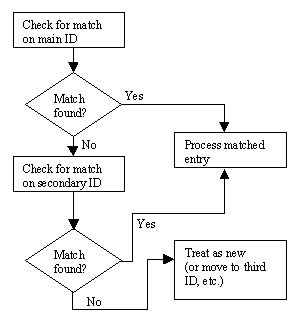
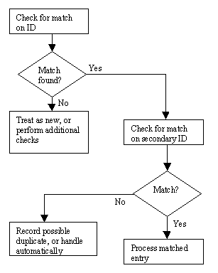
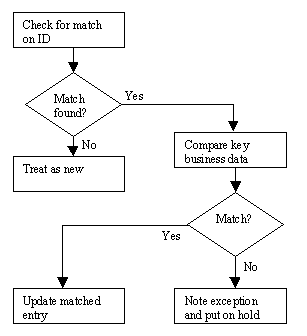
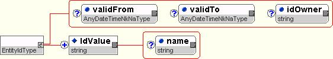
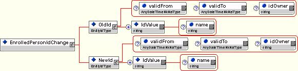
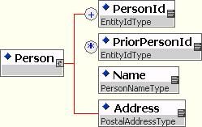
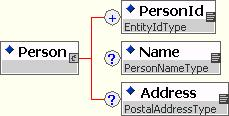

Entity Identifiers
Recommendation, 2007 April 15
Editors:
Karl Brophey, eBenX
Grant Chappell, City and County of Denver
Rob Payne, bp
Sandra Stover
Authors:
Members of the Cross-Process Object work group
Contributors:
Members of the Cross-Process Object work group
Copyright © 2007 HR-XML Consortium, Inc.
Abstract
This document creates a methodology for identifier management that can standardize identifier handling across HR-XML Consortium schemas. This includes a set of design norms and recommendations as well as a XML Schema data type to use for entity identifiers. In addition, common use patterns are laid out, guidance is provided for when this standard should be used, recommendations are given for managing the related topic of identifier-change, and guidelines are included for facilitating trading partner agreements pertaining to identifiers in business transactions.
Table of Contents
1.3.2 Items Within the Design Scope
1.3.3 Items Outside of Design Scope
2 Supported Business Processes
2.3 Usage Examples of Identifiers
2.3.2.1.1 Initial transmission of data
2.3.2.1.2 Transmission with Reply
2.3.2.1.3 Multiple Transmissions Involving the Same Entity
2.3.2.1.4 Related Business Transactions Involving the Same Entity. 10
2.3.2.2 Identifier Change Cases
2.3.2.2.1 Cases with Timely Notification of Identifier Change
2.3.2.2.2 Cases with Late Notification of Identifier Change. 12
2.3.2.3 Receiving System Cases
2.3.2.3.1 More Than One Identifier Provided
2.3.2.3.2 Business Elements Recommended for Verification of Matches
2.3.2.3.3 Prior Value Provided in Primary Transaction
3.1 Entity Identification (Keying) 18
3.1.2 Schema Elements Explained
4 Implementation Considerations
4.1 Choosing to Use EntityIdType Versus Local Definition
4.2 Naming Entity Identification Elements
4.4 Allowing Single versus Multiple Occurrences of Identifiers
4.5 Facilitating Identifier Change. 23
4.5.1 Identifier Change Transactions. 23
5 Appendix A - Document Version History
6 Appendix B – Related Documents
7 Appendix C – Reference Examples
7.4 Effective Dated Identifiers
1 Overview
1.1 Objective
Create a methodology for identifier management that can standardize identifier handling across HR-XML Consortium schemas. This includes a set of design norms and recommendations as well as a XML Schema data type to use for entity identifiers.
1.1.1 Domain Issues
In transporting data, transaction types can be categorized into: those that are single occurrences, and those that may later need to be referred to. For example, when placing an order for a staffing resource, the responder needs to be able to identify which request is being responded to. Additionally, the requester may wish to amend the request, which requires that they be able to reference the previous request so that the amendment changes that previous request rather than looking like a new, additional request. Likewise, for payroll and benefits enrollment, it is important to identify which employee is being referenced so that subsequent feeds amend the information that is already on record rather than setting up duplicate entries.
One could question whether there indeed is any situation where it is not important to be able to later update information. One presumes that items such as an informational publication that need not be acted upon exist and would not require this matching consideration. You may also be able to devise situations where matching is based solely on meaningful business attributes (such as company name and invoice date for billing).
For the great class of transactions that do require the ability to match data in one transmission to data that may have been previously conveyed, the issues involved are identical regardless of what vertical within the HR-domain is being considered. In fact, the issues are nearly independent of domain altogether. The fundamental issue is to be able to match not just the transaction itself (which would almost certainly be an issue for envelopes to address), but to match the most significant entities within a transaction such as an employee or a specific request within a group of requests sent together.
Taking an example, consider perhaps the most ubiquitous example of an entity identifier within the HR domain: personal identifiers, usually for an employee. Personal identifiers are fundamental to almost every HR process. An identifier can be described as an element that identifies an individual in a transaction. Identifiers come in many forms internationally. Organizations in the US (for good or bad) use Social Security Number quite often to identify individuals. Likewise, in Canada groups may use Social Insurance Number. Some organizations may use Driver’s License Number, Employee ID, or even personal traits such as name or date of birth. They may even use a combination of these various forms. The particulars of this identification cannot be enforced as each trading partner might behave differently. Thus a flexible approach is needed.
Regardless of the method chosen, a transaction needs to clearly demonstrate a unique individual, so an implementation might want to suggest how an identifier should be validated against other elements in case duplicates or errors occur. Furthermore, since many of the items that may be used as identifiers are real-world data that must be manually entered into a system, mistakes may happen. Thus, when a transaction definition includes such an identifier, it should address how trading partners manage changes to what was previously communicated.
The concerns surrounding other entities are quite similar to this example. As previously mentioned, the keying of data is really a fundamental systems issue, nearly independent of domain.
1.1.2 Business Reasons
The primary purpose for creating a standard approach to the keying of transactional data is to save effort or duplication of effort. This is in the form of reducing duplicate effort to solve the same problem amongst HR-XML Consortium workgroups, as well as creating a solution that is cheaper to implement when included in HR-XML standards.
Developing an interface for interoperability between companies and/or software vendors may take many months. The development of standard XML vocabularies and schemas can drastically reduce the time needed in the development phase, but certain details still are left to individual trading partners. By creating a well thought-out framework for having those discussions, even this effort is reduced.
Additional business reasons include:
§ Reducing the risk of duplicate entries—be they paid employees, resource requests, or benefit plan participants; and
§ Managing identification across business transactions—that is, within a vertical: for example to be able to identify that a particular billing line ties back to a particular resource request.
1.2 Design Requirements
§ Syntax must be as self-documenting;
§ Must take international requirements into consideration;
§ Must be deployable in existing HR-XML Schemas;
§ Must support processes to correct a previously communicated identifier; and
§ Must be capable of transmitting both multi-part identifiers, and multiple identifiers for the same entity (for example a sending system employee number and a receiving system employee number, assuming the sending system knows both).
1.3 Scope
1.3.1 Major Components
This recommendation includes:
§ A complex schema data type for use in workgroup entity identifiers;
§ Guidelines for inclusion and treatment of entity identifiers; and
§ Boilerplate language for use by workgroups in their recommendations.
1.3.2 Items Within the Design Scope
§ Identifiers made up of multiple parts;
§ Ability to describe within the data what the identifier represents;
§ Identification of the issuer or “owning party” of an identifier;
§ Effective dating of an identifier;
§ Discussion of management of identifier change as a business and transactional process;
§ Discussion of need to support multiple identifiers for the same entity;
§ Discussion of requirements for trading partners to agree on the specific identifier(s) to be supplied; and
§ Discussion of options for recommending secondary matching on business data.
1.3.3 Items Outside of Design Scope
§ Guaranteeing the uniqueness of identifiers;
§ Method of issuing identifiers;
§ Taxonomies of identification owners (such as company names or IDs, government names or country codes, etc.) or typical data used (such as Social Security Number, employee ID, driver’s license number, name, date of birth, etc.); and
§ Creation of any technique for identification; scope is limited to the exchange of data
2 Supported Business Processes
2.1 Vocabulary Requirements
The XML vocabulary adopted for the Entity Identifiers Schema conforms to the guidelines outlined in the Technical Steering Committee’s Schema Design Guidelines document. Where appropriate the same terms are used but some name changes have occurred.
2.1.1.1 Identifier
A set of data that unambiguously identifies the specific object which it describes. For example, a database primary key is the identifier for a database row. An example in a business context is that United States businesses frequently use Social Security Number as the identifier for an employee.
2.1.1.2 Key
One or more fields in an object or record that holds unique data that identifies that object or record from all others. The term "key" is frequently thought of in relation to database systems, particularly in terms of "primary keys" and "foreign keys". To avoid confusion, this recommendation avoids using this term to refer to a data structure for identification within an XML document.
2.1.1.3 Keying
The act of using identifiers or keys to match representations of objects as being of the same object. This could also be thought of as "key matching" or "identifier matching".
2.2 Trading Partner Roles
Because this is a Cross-Process Object, and not a transaction itself, the roles of trading partners using Entity Identifiers will be those of the business processes that include the identifiers. There are a relatively small number of common patterns for trading partner use of identifiers, and these are outlined in the use cases in the next section.
2.3 Usage Examples of Identifiers
2.3.1 Summary
To cover the general topic of identifier usage, rather than documenting a specific business process, this section deals with generalities. There are a limited number of patterns of usage that cover the vast majority of cases. Any real business process will only correspond to a few of these patterns, and the particular patterns will frequently be dictated not only by the business process but by the identifier management strategy of the transaction definition as well.
2.3.2 Use Case Scenarios
This section contains an examination a number of different cases that one might like to support. The first set will consider simple data exchange examples. Next it progresses to consideration of techniques for communication of changes to identifier values. Last are complex cases giving examples of how a receiving system might utilize identifier data.
The cases are listed here, with detailed discussions to follow.
Simple cases:
§ Initial transmission of data
§ Transmission with reply
§ Multiple transmissions involving the same entity
§ Related business transactions involving the same entity
Identifier change cases:
§ Cases with timely notification of identifier change:
§ Transmission, update of data including identifier, and updating transmission noting identifier change
§ Transmission, update of data including identifier, identifier change transaction, and updating transmission
§ Transmission, update of data including identifier, manual communication of identifier change, and updating transmission
§ Cases with late notification of identifier change:
§ Transmission, update of data including identifier, updating transmission (no identifier change noted), and updating transmission noting identifier change
§ Transmission, update of data including identifier, updating transmission, and identifier change transaction
§ Transmission, update of data including identifier, updating transmission, and manual communication of identifier change
Receiving system cases:
§ More than one identifier provided:
§ Receiver attempts match, finds no match, and utilizes additional identifier to find match
§ Receiver attempts match, finds match, and utilizes additional identifiers for verification
§ Business elements recommended for verification of matches:
§ Receiver attempts match, finds match, utilizes recommended business elements for verification, and matches
§ Receiver attempts match, finds match, utilizes recommended business elements for verification, and does not match
§ Prior value provided in primary transaction:
§ Receiver attempts match, finds no match, and utilizes prior value for match
§ Receiver attempts match, finds match, utilizes prior value to detect duplication
2.3.2.1 Simple Cases
These are straightforward representations of common data transmission scenarios.
2.3.2.1.1 Initial transmission of data
In this case, data for a particular business transaction is sent, received, confirmed to be new, and loaded.
The identifier is used in confirming that the data is new. If no data were ever updated, identifiers would not be needed this case would be all that was seen.
2.3.2.1.2 Transmission with Reply
In this case, data for a particular business transaction is sent, received, and loaded. Then the activity requested by the transaction is performed. Finally, a separate business transaction is sent back either confirming for each entity in the original set that the work is done or providing the requested information.
An example of this might be a transaction containing several requests for resumes, each with a given request number. When transactions containing candidate resumes come back, they are identified with the corresponding request number (or numbers if they match several and the transaction is structured to support this structure).
If one does not have an identifier for the request, then the receiver would need to examine the data to deduce which request the data is a match for. This is clearly not desirable.
2.3.2.1.3 Multiple Transmissions Involving the Same Entity
In this case, data for a particular business transaction is sent, received, and loaded. Then the information provided by the sender is updated. They repeat sending the same business transaction with the new data. The second transaction is received, matched, and loaded.
An example of this is passing data from a payroll system to a payroll company for production of checks. Information is sent regarding a given employee. That employee’s pay is changed in the payroll system. An update is sent to the payroll company and the payroll company amends their current data for that employee.
The importance of the matching is seen in this example, since failure to correctly match the employee would result in duplicate checks being issued.
2.3.2.1.4 Related Business Transactions Involving the Same Entity
There are actually a variety of cases that might be considered in this scenario. They follow two basic patterns:
§ System A produces Transaction X for Entity Q and sends to System B; System A then produces Transaction Y for Entity Q and sends to System B.
§ System A produces Transaction X for Entity Q and sends to System B; System B then produces Transaction Y for Entity Q and sends to System A.
This might be considered the same as the previous example of transmission and response. What is being contemplated here is cases where the transactions are not fundamentally joined—Transaction Y is not a logical response for Transaction X. If one modeled the various business events holistically across the HR domain it would be seen to be a natural response, but X and Y are in different verticals, so a narrow analysis does not predict it.
Examples of these patterns come naturally in the combination of benefits and payroll disciplines.
An example of the first pattern can be seen in the passing of data to a flexible spending account administrator. Typically there are separate feeds sent to this administrator, one containing plan enrollment data, and the other containing payroll deduction data. For this case, consider the benefits and payroll systems to be unified as “System A” and the administrator to be “System B”.
An employee, Juan Garcia, is enrolled in a medical FSA account. The fact of that benefit enrollment is sent to the account administrator. Then payroll deductions are made for that benefit and the amount deducted from Juan’s check is sent to the administrator.
The second pattern can be seen in action during the interaction of non-integrated payroll and benefits systems.
A feed is sent from a payroll system to an HRIS system updating employment data for a list of employees. One of these employees moves from full-time to part-time, losing her eligibility for benefits. The HRIS system then terminates the benefits, causing a change in payroll deductions. The HRIS system sends a payroll deduction transaction identifying this same employee with her revised deduction amount.
2.3.2.2 Identifier Change Cases
Aside from the primary use of identifiers in matching entities across transactions, the most significant event an identifier experiences is change. Identifier change frequently leads to undesirable duplication of data. A variety of cases are noted below, but the all to frequent case of an identifier changing and no notification ever being sent is intentionally omitted. This is a default case that is unintended and highly undesirable, and obviously is not the intention for what any transaction supports. The supported cases are differentiated between those cases where the change is noted before a transaction is sent requiring the identifier change, and those where the transaction using the new data arrives first. Each set of cases is split into three different approaches to communicating identifier changes:
§ The business transaction provides an element for previous identifier value
§ A separate transaction is provided for notification of changes to identifier
§ Identifier change notification is a manual process
2.3.2.2.1 Cases with Timely Notification of Identifier Change
These cases assume that an identifier change occurs, and that data about the identifier change is sent in time to handle the change to affect any transaction that depends on the identifier change. Because these are more a matter of system behavior than business requirements, no business scenarios are included.
§ Transmission, Update Of Data Including Identifier, And Updating Transmission Noting Identifier Change
Assume that data has been transmitted. Now the identifier in the source system is changed. As the next transmission from the source system is created, it includes the prior identifier as well as the current one. When the transmission is received and processed, the receiving system sees the prior identifier and looks to see if there is a match. The receiver’s current identifier matches the sender’s prior identifier, so a match is found and the data updates correctly, including updating the identifier.
Incidentally, a match for the prior identifier may not be found. Perhaps because the sender includes the prior information for a month and the receiver has already updated their copy, so the prior value no longer shows in their system. In such a case, you would expect the receiver to operate on the normal identifier as usual.
§ Transmission, Update Of Data Including Identifier, Identifier Change Transaction, And Updating Transmission
Assume that data has been transmitted. Now the identifier in the source system is changed. On the next transmission from the source system, an identifier change transaction is created and sent. Then the regular transmission is sent as usual (with the new identifier). When the transmissions are received and processed, the receiving system first processes the identifier change transactions. Since this is done as the first step, the receiving system now has the identifier on record in their system. The main transmission then processes as usual.
§ Transmission, Update Of Data Including Identifier, Manual Communication Of Identifier Change, And Updating Transmission
Assume that data has been transmitted. Now the identifier in the source system is changed. There is a procedure in place to notify the trading partner and this happens. The trading partner updates the identifier in their system. When the source system is ready for the next transmission a regular transmission is created. When the transmission is received and processed, the receiving system has the changed identifier on record already and the transmission processes as usual.
2.3.2.2.2 Cases with Late Notification of Identifier Change
These cases assume that an identifier is changed, and a transaction is sent identified by the new identifier value without the change being communicated. Finally, the identifier change is transmitted.
§ Transmission, Update of Data Including Identifier, Updating Transmission (No Identifier Change Noted), and Updating Transmission Noting Identifier Change
Assume that data has been transmitted. Now the identifier in the source system is changed. As the next transmission is created, the prior identifier is not included. When the transmission is received and processed, the receiving system does recognize the identifier, thus they create a duplicate.
Later, the source system creates another transmission, and this time the prior identifier is included (and noted as being prior) as well as the current one, and other business changes to apply. When the transmission is received and processed, the receiving system has matches for both the current identifier and the prior identifier. The system may update based on the current identifier only, but it must note that there very likely is a duplicate. The receiving company must enact whatever measures they have to remedy the duplicate situation. As noted, the receiver must decide where to apply the additional business changes, or whether to suspend applying changes for this entity until the duplication is handled.
§ Transmission, Update of Data Including Identifier, Updating Transmission, and Identifier Change Transaction
Assume that data has been transmitted. Now the identifier in the source system is changed. As the next transmission is created, no change transaction for the prior identifier is created. When the transmission is received and processed, the receiving system does recognize the identifier, thus they create a duplicate.
Later, the source system creates the change transaction. When this is received and processed, the receiving system has matches for both the current identifier and the prior identifier. The system must note that there very likely is a duplicate. The receiving company must enact whatever measures they have to remedy the duplicate situation.
§ Transmission, Update of Data Including Identifier, Updating Transmission, and Manual Communication of Identifier Change
Assume that data has been transmitted. Now the identifier in the source system is changed. As the next transmission is created, no change for the identifier has been communicated. When the transmission is received and processed, the receiving system does recognize the identifier, thus they create a duplicate.
Later, the owner of the source system realizes the mistake and communicates the change. When this is received, the owners of the receiving system see that they have a duplicate. They must enact whatever measures they have to remedy the duplicate situation.
2.3.2.3 Receiving System Cases
The following set of cases detail how a variety of scenarios might be handled using identifier information by a receiving system. These are not the only ways of handling the given situations, nor even necessarily the best, thus they are not recommendations. They are included as examples of the types of use that a keying mechanism might reasonably be expected to support. These examples are more of an algorithm to consider rather than a use case.
2.3.2.3.1 More Than One Identifier Provided
These cases outline how a transaction that allows for multiple identifiers to be provided supports more robust operation.
§ Receiver Attempts Match, Finds No Match, and Utilizes Additional Identifier to Find Match
Assume that the sender is providing more than one identifier per entity and that the receiving system has stored all of these identifiers and can check for a match on each. The receiving system might follow these steps to prevent duplicates that a single key might allow:

§ Receiver Attempts Match, Finds Match, and Utilizes Additional Identifiers for Verification
Assume that the sender is providing more than one identifier per entity and that the receiving system has stored all of these identifiers and can check for a match on each. The receiving system might follow these steps to confirm the identifier that was agreed to for matching:

2.3.2.3.2 Business Elements Recommended for Verification of Matches
These cases outline how a transaction implementation guide can help enable a more robust business process by defining likely “key” attributes. That is, if there is a set of business data that generally will uniquely identify an entity (a set of “key” attributes), various measures can be employed by a receiving system to increase the robustness of the interchange. The following two scenarios are considered in one flow chart.
§ Receiver Attempts Match, Finds Match, Utilizes Recommended Business Elements for Verification, and Matches
§ Receiver Attempts Match, Finds Match, Utilizes Recommended Business Elements for Verification, and Does Not Match
A system attempting to handle these situations might follow this logic:

The assumption here is that a person can cheaply validate whether the match is correct or not, and avoid a duplication that might be costly to remedy later.
2.3.2.3.3 Prior Value Provided in Primary Transaction
These cases outline how identifier change is handled on transactions that include the prior value in place.
§ Receiver Attempts Match, Finds No Match, And Utilizes Prior Value For Match
Assuming a receiving system has a method to attempt a match, it might follow this flow:

§ Receiver Attempts Match, Finds Match, Utilizes Prior Value to Detect Duplication
Assuming a receiving system has a method to attempt a match, it might follow this flow:

A caveat here is that with non-system identifiers (such as a government-issued ID number), sometimes the reason for the change is that an error was discovered by trying to record the entity that rightfully has the given identifier. For example, in a system that uses US social security numbers as identifiers, if Joe is entered with SSN 111‑22‑3333 but the last digit should be a 4, the error might be discovered when Juanita is entered and Juanita’s SSN really is 111‑22‑3333. In such a case, matching on the prior incorrect value beyond the first transmission would be undesirable. When such an algorithm is used to provide a warning rather than an automated response, it can aid in cleaning up duplicates that might otherwise go undetected.
3 Schema Design
3.1 Entity Identification (Keying)
3.1.1 Schema Diagrams

3.1.2 Schema Elements Explained
|
Component Name [Global types listed at the end of the table.] |
ContentModel |
Definition |
|
/ |
xsd:extension base: xsd:string |
A sequence of characters that one or more systems use as an identifier for the given entity. This could be numeric, alpha, and may include punctuation. |
|
/
IdValue/ |
- xsd:string - |
A description of the type of identifier or the portion of an identifier that “IdValue” represents. If used, values should be determined by trading partner agreement. See Appendix B in the specification documentation for examples of use. |
|
/ |
IdValue
- xsd:string - S
(1/*) |
Data Type used to represent any Entity Identifier. |
|
/
EntityIdType/ |
- AnyDateTimeNkNaType - |
A method for “effective dating” identifiers. Use should be determined by trading partner agreement. See Appendix B in the specification documentation for examples of use. |
|
/
EntityIdType/ |
- AnyDateTimeNkNaType - |
A method for “effective dating” identifiers. Use should be determined by trading partner agreement. See Appendix B in the specification documentation for examples of use. |
|
/
EntityIdType/ |
- xsd:string - |
A description of who “owns” the identifier. This usually will be the company and/or system name that utilizes the given value(s) for uniqueness. Use should be by trading partner agreement. See Implementation Considerations on the use of multiple identifiers for further discussion. See Appendix B in the specification documentation for examples of use. |
4 Implementation Considerations
Topics:
§ Choosing to use EntityIdType versus local definition
§ Naming Entity Identification Elements
§ Multipart identifiers
§ Allowing single versus multiple occurrences of identifiers
§ Facilitating identifier change
4.1 Choosing to Use EntityIdType Versus Local Definition
Entity Identifiers are a more nebulous concept than other Cross Process Objects such as Postal Address or PersonName. As such, work groups may not be clear when it is appropriate to utilize the defined type and the surrounding frameworks in this recommendation. This section attempts to provide clear explanations.
An entity is a discrete object of some kind. Thus it is largely a reference to a particular noun, - “a person”, “an employee”, “a purchase order”, “a staffing request”, “an invoice”, etc. EntityIdType provides a means of uniquely identifying a particular employee, staffing request, or the like.
EntityIdType is intended only to contain unique identifiers of the entities being passed in the transaction. If a data element is intended to allow a system to match an entity to data previously sent, or to reply with data about the entity and have it be matched, use the EntityIdType. For example, if company A sends a request to fill a position to staffing company B, and company B later sends candidates for the position, the second exchange needs to identify the position sent in the first transaction. EntityIdType would be a good data type to use for the position identifier element in both transactions.
However, if a data element is intended for use by the business context for purposes other than unique entity identification do not use EntityIdType, instead create an appropriate structure for that data.
Consider an example – a trucking company might need to have the driver’s license information for an employee on file. The license number may need to be transmitted for government compliance reporting purposes. The reason for including driver’s license data is that you clearly show that all drivers are licensed. This purpose is not a general method of identifying entities passed in a transaction. Further, there are a number of additional attributes specific to a driver’s license number, such as a grade (commercial, etc.) that could be important for business purposes but not for unique entity identification. The owner attribute and multi-part nature of the EntityIdType could conceivably be used to house the data. But the driver’s license is relevant to the business, so the schema would be much clearer and resulting documents would be more likely to contain all needed data if a new “DriversLicense” type were defined.
So to summarize, it is recommended that the EntityIdType be used for all elements or attributes whose only intent is to provide the ability to do transaction-to-transaction keying of transmitted entities to a sending or receiving system. It is further recommended that other specific, detailed, and descriptive types be used for elements and attributes whose purpose is to supply other business-relevant data.
4.2 Naming Entity Identification Elements
This recommendation provides a schema data type, but no global element. It is expected that each schema that utilizes the EntityIdType will create a specifically named element to match the type of entity being identified. Thus a JobPosting schema would contain an element named JobPostingId. It is felt that this leads to designs that are much more easily understood by users of the published schemas.
In addition to identifying an entity in a transaction, an identifier might be used to refer to a previously defined entity. For example, a response transaction that summarizes processing may need to identify that there was a business error in the data for a particular submitted entity. This reference should use the same element name as was used to identify the entity. Thus if the previously mentioned JobPosting schema had a response schema, and the response contains information about each individual JobPosting, the response should include a JobPostingId element.
4.3 Multi-part Identifiers
Sometimes a trading partner uses a combination of values in order to uniquely identify an entity. For example, an organization might use an employee ID along with a subsidiary company ID in order to uniquely identify an individual. It is possible to treat these two values as strings and concatenate them in order to create a unique value, but parsing out the individual segments from the concatenated string can be complex and error prone. EntityIdType allows for more than one IdValue element in order to facilitate multipart identifiers such as this.
This also allows personal “traits” to be used as an identifier. For example, a person sometimes will be identified in a system by their first, middle, and last names, plus sex date of birth. An identifier could be created with five parts, one for each of these “traits”. If the data for these “traits” is included elsewhere in the transaction, it may not be obvious why you would repeat them in the identifier. There are multiple reasons to do this.
First, identifiers should have a documented method for communicating changes, which business data typically does not have. Thus by placing data in an identifier, it becomes easier to prevent duplication than if matching were simply done on a series of business elements. Also, by always using the identifier element to perform identification, it maintains responsibility for determining uniqueness with the sender of data.
In both of the cases looked at, it is desirable to fill in the “name” attribute on the IdValue elements to reflect what the particular portion of the identifier represents. In the first example, it would differentiate between the employee ID and the company ID. For the second example, it would identify which of the five traits was being provided. Example XML documents for these cases are included in Appendix B.
4.4 Allowing Single versus Multiple Occurrences of Identifiers
When implementing an element with EntityIdType, a significant consideration is whether to allow multiple occurrences of that element. The reason for doing so would be to allow for a collection of identifiers to be included when a business transaction involves more than two trading partners.
In reality, nearly any transaction could involve an intermediary. An intermediary may have reason to have its own system identifiers, and may pass both the originator’s identifier as well as its own.
Even for a pair of trading partners, they may have independent identifiers and may opt to pass the identifiers for both systems back and forth. This might occur when the communication is between two systems of the same organization, such as synchronization feeds between multiple HRIS systems for an employer.
The majority of users of HR-XML standards will employ a single identifier. But in order to facilitate use by all parties, schemas will usually need to allow for multiple identifiers. Only in cases where a work group can demonstrate that multiple identifiers would never make sense should it restrict identifiers to a single occurrence.
When using multiple identifiers, the receiver must be able to determine which identifiers on the current transmission to match to those of prior transmissions. This is the purpose of the optional “idOwner” attribute.
An example would be a company with HRIS installations in Europe and Africa. It could fill “idOwner” in with values of “EuropeHRIS” and “AfricaHRIS”. Thus on a given transaction an identifier tagged with “EuropeHRIS” should be matched with identifiers that were also tagged with “EuropeHRIS”. Likewise for “AfricaHRIS” you would match to previously sent identifiers with that designation.
Because of the desire for the use of multiple occurrences to be governed by trading partner agreement, and because of the complexity involved, it is recommended that work groups discuss the topic in their Implementation Considerations. Possible text for that section is included here. It should be tailored to best meet the situation and needs of the particular business transaction being supported.
Sample Boilerplate Text for Work Group Use:
Multiple Occurrences of Identifiers
Certain elements (<list names>) are used to provide a means for matching data from one transmission to another. <This/These> element<s> allow<s> for multiple occurrences.
If multiple identifiers are to be used, a trading partner agreement should stipulate this. The agreement should state what the various identifiers are and how they are to be used. Further, the agreement should identify what value should be placed in the “idOwner” attribute for each identifier.
In the absence of a trading partner agreement as just described, it should be assumed that each of these identifier elements (<list names>) is considered single instance.
4.5 Facilitating Identifier Change
In an ideal world, any identifier used to match entities would be permanent and unchanging. Of course this is not always the case. System conversions lead to changes in system-generated ID values; identifiers get mistyped and must be corrected. Since a system of passing entity identifiers exists solely to ensure information is correctly associated and that duplicates do not occur, such a system must provide for such change scenarios.
This recommendation document strongly suggests that if a work group uses the EntityIdType for persistent data the group must provide a defined mechanism in their Implementation Considerations section of their recommendation for managing identifier change. The preferred method is to provide a separate identifier change transaction (as described below), but any of the following methodologies are acceptable provided they are documented:
§ Identifier change transactions (preferred)
§ Previous value element as a peer to the identifier
§ Manual (non-systematic) notification
Each of these methods is detailed below.
4.5.1 Identifier Change Transactions
An identifier change transaction contains an XML document that communicates a change for a specific use of an EntityIdType. It is recommended that the schema for this transaction include a place for both the previous and new (replacement) values.
Thus to change the identifier for a person in the Benefits Enrollment transaction (which uses the element name “IdentificationCode”) the following schema might be used:

This additional transaction type would be documented in the Benefits Enrollment recommendation document. Implementation of sending and receiving this additional transaction type would be considered part of implementing the Benefit Enrollment standard.
Since not all systems can necessarily handle identifier changes automatically, it is recommended that in the Implementation Considerations section of the recommendation, that “manual notification” for identifier changes be stipulated as a less desirable alternative available by trading partner agreement.
Sample Boilerplate Text for Work Group Use:
Handling Identifier Changes
Certain elements (<list names>) are used to provide a means for matching data from one transmission to another. Because the data contained in <this/these> element<s> may change over time, a method for systematically communicating these changes is provided.
If multiple identifiers are provided for keying, the “idOwner” attribute must be used to match the correction information to the previous information. See the Implementation Considerations for multiple identifiers for more information on “idOwner”.
It is assumed that the receiver of data will handle any business implications from resolving the change to the identifier. This might include resolving the situation where duplication of the given data has already occurred. If the sender cannot assume this will be handled, it should be stipulated in a trading partner agreement.
Likewise, if either a sender or a receiver in a trading partner arrangement cannot send identifier changes systematically as described, a trading partner agreement should state that identifier changes will be communicated via correspondence. Such an agreement might list any detailed requirements or procedures.
If there are multiple entity identifiers in the transactions of a particular recommendation, the identifier change transaction can be structured to allow all of the identifiers to be modified using a single schema, or a separate schema can be defined for each. What is significant is that the identifier change can be automatically handled.
There should be a discussion in the Implementation Considerations section of the recommendation for both this option and the “Previous Value Element” option. Boilerplate text that might be used for this purpose is shown above.
4.5.2 Previous Value Element
The second method for automatic handling of identifier change is to put an additional element in the primary transaction. This element would sit next to the actual identifier and would have a name indicating that it was storing a previously sent value. Like the identifier, the prior identifier element would be of type EntityIdType. In most cases identifier elements are required, however the prior identifier element should always be optional. Finally, prior identifier elements should always allow multiple occurrences, even if the identifier element allows only a single occurrence—this allows multiple previous incorrect values to be communicated.
The explanation for the prior identifier element should read like:
“Contains previously communicated identification data. The current identification data is transmitted in <element name>. The previous data is for use in handling identifier changes. See the Implementation Considerations section for more details.”
Additionally, commentary must be put in the Implementation Considerations section. An example of what that text might be is included in the discussion of the “Identifier Change Transactions”, above.
For an element named Person that has an identifier called PersonId, implementing this method for handling changes might result in this schema:

4.5.3 Manual Notification
As discussed above, identifier changes can be communicated in a non-automated way. This should normally be considered a fallback position to be left to trading partners who cannot automate the process. For a business transaction where it is deemed highly unlikely that identifier changes will occur, it may be suggested that those cases be handled via separate communication between trading partners. As in the above examples, it is recommended that the topic of identifier change be discussed in the Implementation Considerations section.
5 Appendix A - Document Version History
|
Date |
Description |
|
2002-03-11 |
Candidate submission to TSC |
|
2002-April-1 |
Present for Membership review |
|
2002-April-10 |
Approved Spec. |
|
2003-Feb-26 |
Approved recommendation by HR-XML Consortium. The default and targetNamespaces of all HR-XML schemas have been standardized to "http://ns.hr-xml.org". This recommendation is available as part of the HR-XML 2_0 architecture. |
|
2006-Feb-28 |
Approved by Consortium |
|
2007-Apr-15 |
Approved by Consortium |
6 Appendix B – Related Documents
|
Reference |
Link |
|
EntityId 1.0 schema |
http://ns.hr-xml.org/2_5/HR-XML-2_5/CPO/EntityIdType.xsd
|
7 Appendix C – Reference Examples
Examples:
§ Simple person identifiers
§ Multiple identifiers
§ Multi-part identifiers
§ Effective dated identifiers
Each example contemplates an identifier being used in the context of an element named “Person”. “Person” contains the element these examples are illustrating, “PersonId”, that is of type EntityIdType. Presumably, it also contains elements like “Name” and “Address”, so that the schema might look like:

Since the concern is only with how the EntityIdType is utilized, the examples show only the “Person” and “PersonId” elements.
7.1 Simple Person Identifiers
The most straightforward example is where a person is identified with a single, one-part identifier. In such a case it does not matter who owns the identifier, or what the identifier represents.
If Cogs, Inc. sends Mohammed Abdul to their payroll administrator, PayCo, and Mohammed’s employee ID in Cogs’ HRIS is 113355, the transaction might look like:
<Person>
<PersonId>
<IdValue>113355</IdValue>
</PersonId>
</Person>
A more verbose option is:
<Person>
<PersonId idOwner="Cogs, Inc.">
<IdValue name="Employee ID">113355</IdValue>
</PersonId>
</Person>
7.2 Multiple Identifiers
Extending the above example, say that PayCo has started receiving data through an intermediary named GlueCom. GlueCom has their own system identifiers, and Mohammed’s is MA237. Presumably Cogs will send the same data as before, just to GlueCom rather than PayCo. If PayCo has arranged with GlueCom to provide both identifiers, the transaction would look like:
<Person>
<PersonId idOwner="Cogs, Inc.">
<IdValue>113355</IdValue>
</PersonId>
<PersonId idOwner="GlueCom">
<IdValue>MA237</IdValue>
</PersonId>
</Person>
7.3 Multi-part Identifiers
Cogs buys another company, GearTech, and makes them a largely independent division. GearTech keeps their own HRIS system, but is switching to utilizing PayCo, and Cogs will send a feed with data from both HRIS systems. There is a problem: the employee IDs between the two systems overlap, so you cannot identify just by employee ID. Their solution is to add a division indicator and works this out with GlueCom (that data receiver for PayCo).
Now Mohammed’s entry in a transaction might look like:
<Person>
<PersonId>
<IdValue name="Employee ID">113355</IdValue>
<IdValue name="Division">Corporate</IdValue>
</PersonId>
</Person>
When GlueCom passes this information to PayCo, it will now look like:
<Person>
<PersonId idOwner="Cogs, Inc.">
<IdValue name="Employee ID">113355</IdValue>
<IdValue name="Division">Corporate</IdValue>
</PersonId>
<PersonId idOwner="GlueCom">
<IdValue>MA237</IdValue>
</PersonId>
</Person>
This example matches to the first scenario in the multi-part identifiers discussion in Implementation Considerations (section 4.2). The other example in that section is using personal traits to identify a person.
Assuming Mohammed was born 1963-04-14, a trait-based identification would look like:
<Person>
<PersonId>
<IdValue name="FirstName">Mohammed</IdValue>
<IdValue name="MiddleName"></IdValue>
<IdValue name="LastName">Abdul</IdValue>
<IdValue name="Sex">M</IdValue>
<IdValue name="DOB">1963-04-14</IdValue>
</PersonId>
</Person>
7.4 Effective Dated Identifiers
Taking the example even farther, Cogs has decided to converge to one HRIS system, and they decide to use the one at GearTech, meaning that everyone in the Cogs HRIS must be given a new employee ID; Mohammed’s will be 2221001. In preparation for the transition, they arrange to begin sending both the current and the future identifier values. If their plan is to begin using the combined system on 2000-08-01, the transmission might look like:
<Person>
<PersonId validFrom="1900-01-01" validTo="2000-07-31">
<IdValue name="Employee ID">113355</IdValue>
<IdValue name="Division">Corporate</IdValue>
</PersonId>
<PersonId validFrom="2000-08-01" validTo="notApplicable">
<IdValue name="Employee ID">2221001</IdValue>
<IdValue name="Division">GearTech</IdValue>
</PersonId>
</Person>
Thus, effective dating in this case takes the place of identifier change mechanisms.
In this example, since they are switching to a single system again, they would probably like to switch back to a single-part identifier, which would make the transmission look like:
<Person>
<PersonId validFrom="1900-01-01" validTo="2000-07-31">
<IdValue name="Employee ID">113355</IdValue>
<IdValue name="Division">Corporate</IdValue>
</PersonId>
<PersonId validFrom="2000-08-01" validTo="notApplicable">
<IdValue>2221001</IdValue>
</PersonId>
</Person>
This has the unpleasant side effect of the two portions of the timeline of identifiers not having the same structure (not the same number of parts). Because use of effective dates, multiple identifiers, and multi-part identifiers are left to trading partner arrangement, if Cogs and GlueCom agree this is how they want to handle their situation, it is perfectly acceptable, and this recommendation supports this type of flexibility.